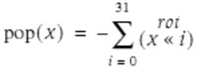

10.3. Other Methods
Item 169 in the HAKMEM memo[ ]is an algorithm that counts the number of 1-bits in a word x by using the first three terms of the formula shown in the previous section on each 3-bit field of x separately, to produce a word of 3-bit fields, each of which contains the number of 1-bits that were in it. It then adds adjacent 3-bit fields to form 6-bit field sums, and then adds the 6-bit fields by computing the value of the word modulo 63. Although originally developed for a machine with a 36-bit word, the algorithm is easily adapted to a 32-bit word. This is shown below in C (the long constants are in octal):
]is an algorithm that counts the number of 1-bits in a word x by using the first three terms of the formula shown in the previous section on each 3-bit field of x separately, to produce a word of 3-bit fields, each of which contains the number of 1-bits that were in it. It then adds adjacent 3-bit fields to form 6-bit field sums, and then adds the 6-bit fields by computing the value of the word modulo 63. Although originally developed for a machine with a 36-bit word, the algorithm is easily adapted to a 32-bit word. This is shown below in C (the long constants are in octal):
[
int pop(unsigned x) {
unsigned n;
n = (x >> 1) & 033333333333; // Count bits in
x = x - n; // each three-bit
n = (n >> 1) & 033333333333; // field.
x = x - n;
x = (x + (x >> 3)) & 030707070707; // Six-bit sums.
return x%63; // Add six-bit sums.
}
The last line uses the unsigned modulus function. (It could be either signed or unsigned if the word length were a multiple of 3.) It's clear that the modulus function sums the 6-bit fields when you regard the word x as an integer written in base 64. Upon dividing a base b integer by b - 1, the remainder is, for b  3, congruent to the sum of the digits and, of course, is less than b - 1. Because the sum of the digits in this case must be less than or equal to 32, mod(x, 63) must be equal to the sum of the digits of x, which is to say equal to the number of 1-bits in the original x.
3, congruent to the sum of the digits and, of course, is less than b - 1. Because the sum of the digits in this case must be less than or equal to 32, mod(x, 63) must be equal to the sum of the digits of x, which is to say equal to the number of 1-bits in the original x.
This algorithm requires only 10 instructions on the DEC PDP-10, as that machine has an instruction for computing the remainder with its second operand directly referencing a fullword in memory. On a basic RISC, it requires about 15 instructions, assuming the machine offers unsigned modulus as one instruction (but not directly referencing a fullword immediate or memory operand). But it is probably not very fast, because division is almost always a slow operation. Also, it doesn't apply to 64-bit word lengths by simply extending the constants, although it does work for word lengths up to 62.
A rather amazing algorithm is to rotate x left one position, 31 times, adding the 32 terms.[ ]The sum is the negative of pop(x)! That is:
]The sum is the negative of pop(x)! That is:
[

where the additions are done modulo the word size, and the final sum is interpreted as a two's-complement integer. This is just a novelty; it would not be useful on most machines because the loop is executed 31 times and thus requires 63 instructions plus the loop-control overhead. I leave it to the reader to figure out why this works.